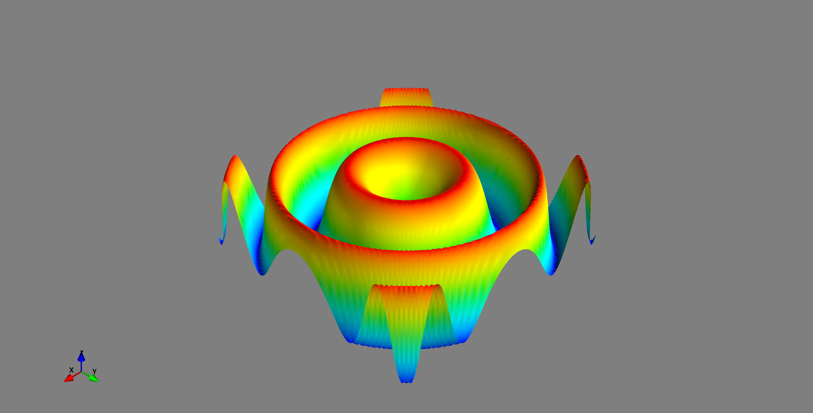

Python has a lot of libraries for data visualization and I recently stumbled over an awesome talk from PyCon 2017 by Jake VanderPlas titled "The Python Visualization Landscape" which gives an overview over them:
- Matplotlib
- seaborn: statistical data visualization
- Pandas: Dataframes
- networkx: Graphs
- ggpy: Python implementation of the grammar of graphics
ggplot: Also based on the Grammar of Graphics- Yellow Brick
- scikit-plot
- Datashader: Turns even the largest data into images
- Vaex: visualize and explore large (~billion rows/objects) tabular datasets interactively
- Holoviews
- Javascript
- OpenGL
- Specification languages:
Maps
Visualizing maps is super hard, as the tools which exist don't have good installers.
Here is what I've tried/seen so far:
3D
Mayavi
MayaVi is a scientific data visualizer written in Python, which uses VTK and provides a GUI via Tkinter.
Example:
# 3rd party modules
from mayavi import mlab
import numpy
x, y = numpy.mgrid[-3:3:100j, -3:3:100j]
z = numpy.sin(x ** 2 + y ** 2)
mlab.surf(x, y, z)
gives
{kind=link}
